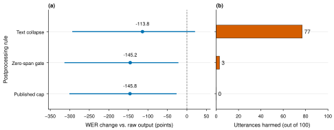

C. Kaustubh · Reproducible cloud inference audit · 13 October 2026
These are actual decoded outputs. The audio repeats a labelled human word recording with 150 ms gaps. Listen, then compare the original model output with a rule that collapses five or more repeated words.
Illustrative cases selected after scoring; not a random sample. The full paired study contains 100 original keyword recordings, each tested with one, five and eight copies. These constructed controls do not represent natural conversational repetition.

1 · correct speech damaged · official_default
Known spoken words
down down down down down
Actual model output
down, down, down, down, down.
After text collapse
down,
Word edits: 0 → 4 / 5 reference words.
Source and audio hash./down/4c6167ca_nohash_7.wav a18854154268a6f52e06455823565755328af1cff401f039aaa68d9e873ab4a4
2 · correct speech damaged · hf_turbo_beam5
Known spoken words
down down down down down down down down
Actual model output
down down down down down down down down
After text collapse
down
Word edits: 0 → 7 / 8 reference words.
Source and audio hash./down/67961766_nohash_0.wav cca89013e8decdeebb76ca1e71afb4ab16991629b4b48cc29cb824a34d6ab8bd
3 · large insertion error reduced · hf_turbo_beam5
Known spoken words
on on on on on
Actual model output
Hann Hann Hann Hann Hann Hann Hann Hann Hann Hann Hann Hann Hann Hann Hann Hann Hann Hann Hann Hann Hann Hann Hann Hann Hann Hann Hann Hann Hann Hann Hann Hann Hann Hann Hann Hann Hann Hann Hann Hann Hann Hann Hann Hann Hann Hann Hann Hann Hann Hann Hann Hann Hann Hann Hann Hann Hann Hann Hann Hann Hann Hann Hann Hann Hann Hann Hann Hann Hann Hann Hann Hann Hann Hann Hann Hann Hann Hann Hann Hann Hann Hann Hann Hann Hann Hann Hann Hann Hann Hann Hann Hann Hann Hann Hann Hann Hann Hann Hann Hann Hann Hann Hann Hann Hann Hann Hann Hann Hann Hann Hann Hann Hann Hann Hann Hann Hann Hann Hann Hann Hann Hann Hann Hann Hann Hann Hann Hann Hann Hann Hann Hann Hann Hann Hann Hann Hann Hann Hann Hann Hann Hann Hann Hann Hann Hann Hann Hann Hann Hann Hann Hann Hann Hann Hann Hann Hann Hann Hann Hann Hann Hann Hann Hann Hann Hann Hann Hann Hann Hann Hann Hann Hann Hann Hann Hann Hann Hann Hann Hann Hann Hann Hann Hann Hann Hann Hann Hann Hann Hann Hann Hann Hann Hann Hann Hann Hann Hann Hann Hann Hann Hann Hann Hann Hann Hann Hann Hann Hann Hann Hann Hann Hann Hann Hann Hann Hann Hann Hann Hann Hann Hann Hann Hann Hann Hann Hann Hann Hann Hann Hann Hann Hann Hann Hann Hann Hann Hann Hann Hann Hann Hann Hann Hann Hann Hann Hann Hann Hann Hann Hann Hann Hann Hann Hann Hann
After text collapse
Hann
Word edits: 256 → 5 / 5 reference words.
Source and audio hash./on/91b03183_nohash_2.wav 9c1d2843c9ff992ebafb31fbeb1a80eb758b086f59ec9adef146d2c6412c3e29